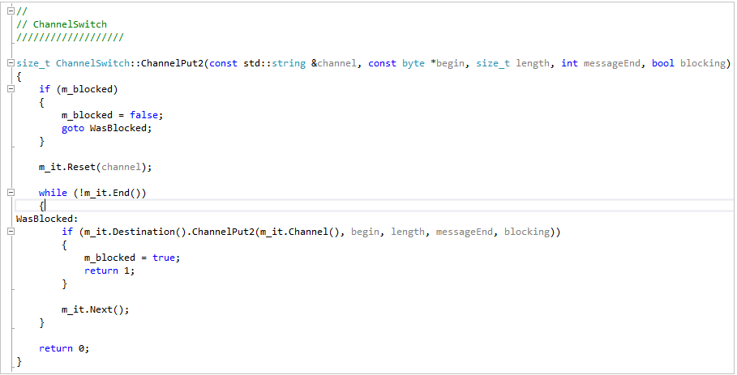

C++ (1980)
C++ é uma linguagem de programação de propósito geral e de alto nível, criada como uma extensão da linguagem C. Foi desenvolvida por Bjarne Stroustrup e lançada pela primeira vez em 1983. ela combina recursos da linguagem C com recursos adicionais que permitem a programação orientada a objetos.

Uma das principais vantagens do C++ é sua eficiência e desempenho. Ele permite um controle mais preciso sobre a alocação de memória e o gerenciamento de recursos, o que o torna uma escolha popular para o desenvolvimento de aplicativos que exigem alta performance, ela tambem suporta programação orientada a objetos, o que significa que permite a criação de classes, objetos e herança. Esses recursos facilitam a organização e a estruturação do código, tornando-o mais modular e reutilizável.
Atividade desenvolvida como extensão no projeto
PACEX/Mundo Tech do curso de análise e Desenvolvimento de Sistemas
Unipar - Cascavel